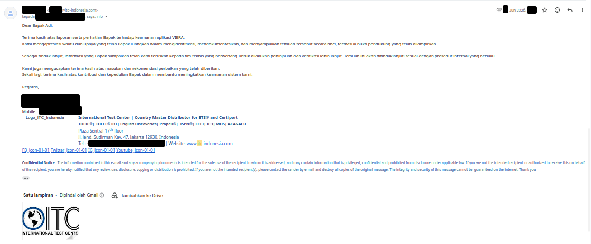
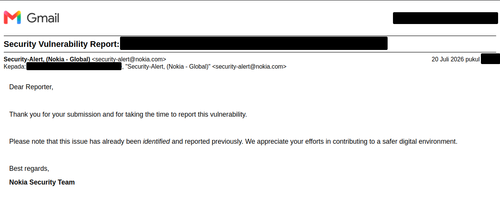
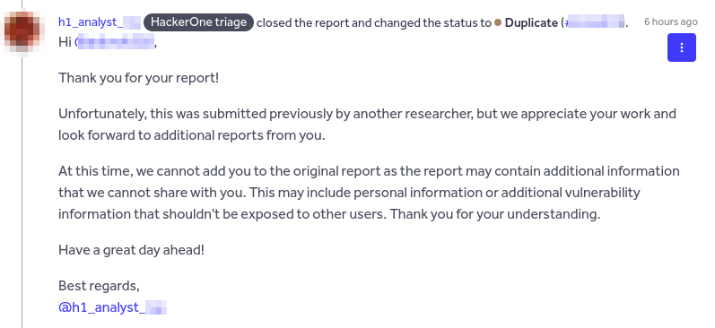
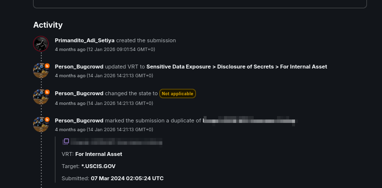

Strategic National Infrastructure Research
Beyond participating in public bug bounty platforms, I proactively dedicate my expertise to strengthening Indonesia's national digital defense. Through responsible disclosure, I have successfully identified and assisted in the remediation of 160 validated vulnerabilities across 100+ national strategic entities.
[ Vulnerability Breakdown Table ]
| Severity Category | Count | CVSS 3.1 Range |
|---|---|---|
| Critical | 16 | 9.0 - 10.0 |
| High | 66 | 7.0 - 8.9 |
| Medium | 68 | 4.0 - 6.9 |
| Low | 10 | 0.1 - 3.9 |
Verify Technical Authenticity
I maintain a transparent log of redacted communication with various entities to validate the findings mentioned above.
[ VIEW TECHNICAL EVIDENCE LOGS ]Disclosure & Integrity Policy
To uphold the principles of National Cyber Resilience, I maintain strict confidentiality regarding the identities of institutions. All findings are reported through the National Cyber and Crypto Agency (BSSN) or respective CSIRT teams. Technical scores are calculated using the CVSS v3.1 Framework with in-depth validation for data accuracy.
DETAILED TRIAGE LOGS (PUBLIC PROGRAMS)
Auth Bypass & Critical IDOR (PII Data Leakage)
Aplikasi VIERA - PT International Test Center (ITC) IndonesiaA critical security vulnerability affecting over 100,000 student records has been identified. This vulnerability allows for full authentication bypass and Insecure Direct Object Reference (IDOR), allowing unauthorized access and manipulation of sensitive PII data (NISN, email, phone number, and other sensitive data). It has been addressed and acknowledged by the ITC technical team.
[+] VIEW TRIAGE ACKNOWLEDGMENT
// Official Response from ITC Indonesia Support Team

Sensitive Data Exposure > Disclosure of Secrets
HSBC (Bugcrowd)Successfully identified the exposure of sensitive credentials within the application scope. The security team triaged the report as technically valid.
[+] VIEW VALIDATION LOG

Research Series: Multiple Information Disclosure & XSS
Nokia (Official Independent VDP)Extensive security research conducted on Nokia's global infrastructure. Identified multiple high-impact vulnerabilities across production environments. All findings were triaged by the Nokia Product Security Team as technically valid research.
[ Research Timeline & Logs ]
- • Credentials Exposure: Found in SWDP Production Frontend xxx-xxx.xxx.xxx.nokia.com
- • OAuth Secret Leak: Sensitive Google Client Secret exposed in JS xxx.xxx.xxx.saas.nokia.com
- • Reflected XSS: Vulnerability on main network login portal login.xxx.nokia.com
Detected an information leakage vulnerability revealing internal system configurations on public-facing infrastructure.
[+] VIEW REDACTED VALIDATION LOGS


Information Disclosure > Leak of Client Configuration & Secrets
Kaseya (Inky)Identified a sensitive configuration exposure within a Keycloak instance. The research detailed a vulnerability chain where leaked client secrets and an insecure CORS policy could be leveraged for authenticated data exfiltration. The finding was confirmed as technically valid and passed preliminary review.
[+] VIEW VALIDATION LOG

Sensitive Data Exposure > Disclosure of Secrets (Internal Asset)
U.S. Dept. of Homeland Security (DHS)
Identified a sensitive data exposure vulnerability on a
public-facing
*.uscis.gov infrastructure. The research uncovered an
unprotected endpoint leaking information regarding internal assets
and system configurations. The finding was technically validated as
a legitimate security risk by the triage team, though it was
identified as a duplicate of a previously reported issue.
[+] VIEW VALIDATION LOG
